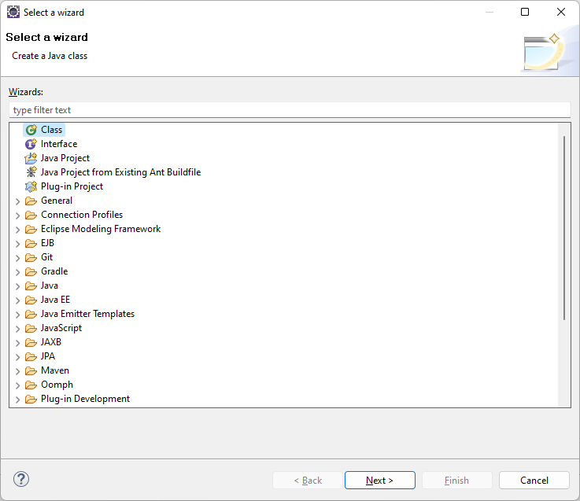

Открыть это окно можно кучей способов, и если вас очень интересует, как это можно сделать, то вы можете выполнить следующее упражнение
Открытие окна с шаблонами проектов
Но мы сделаем проще. Используем комбинацию клавиш CTRL + N, и перед нами откроется вот такое окно:

Теперь среди кучи этих проектов нужно найти, где здесь создается новое Web-приложение для Maven.
Для этого мы переходим к следующему шагу.